Install Guide
Install and run TiffinDB
For the person who puts TiffinDB on shared PHP hosting or on an Apache server, or who starts a development server. Every requirement, path, and setting below is taken from the code.
Part 1Before you start
Verification status
Apache was never available in the environment where TiffinDB was built and where this guide was checked, and the reference shared host has not been checked yet. The host check is a deferred maintainer task (build ledger, section 5). Every Apache and shared-hosting step in this guide is derived from the code and from the two .htaccess files. None of them comes from a run on Apache.
What was run: the setup page, the requirement check, the exposure probe outcomes, the host check script, the password reset tool, and the composer scripts, all with the PHP 8.3 built-in server.
No release yet
There is no release archive. It is part of milestone M7, together with a tested upgrade path. Until then you install from the source code and run composer install --no-dev to get the one runtime library. Treat an installation as a test installation, and keep backups (Part 10).
A TiffinDB installation has two parts:
- The application folder: the source code, the
vendor/folder made by Composer, and an optionalconfig/local.php. Only itspublic/folder must be reachable from the web. - The data folder: the system database (
system.sqlite) and one folder for each project. The setup page makes it. It must never be reachable from the web.
There is no database server, no cron job, and no background process. TiffinDB makes no network calls, with one exception: during setup it may send a few HTTP requests to its own server to test that the data folder cannot be downloaded (Part 6).
Choose a deployment path
Part 2Requirements
The setup page checks the running PHP before it writes anything (src/Core/Install/Installer.php, method requirements()). This table lists the eleven checks in the order the page shows them. A row marked Needs fixing stops setup. A row marked Works, with a note lets setup continue.
| Check on the page | What is tested | If it fails |
|---|---|---|
| PHP version | PHP 8.3 or later (PHP_VERSION_ID >= 80300) | Needs fixing. See the note below this table. |
| SQLite database support | pdo_sqlite loaded, SQLite library 3.35.5 or later | Needs fixing |
| Zip archives | zip extension | Needs fixing (project archives) |
| Reading spreadsheet files | xmlreader extension | Needs fixing (XLSX import) |
| XML documents | dom extension | Works, with a note: XLSX import and export are unavailable |
| Data filtering | filter extension | Works, with a note: as above |
| XML library | libxml extension | Works, with a note: as above |
| Secure random numbers | random_bytes(16) works | Needs fixing |
| Password protection | Argon2id available to password_hash | Works, with a note: bcrypt is used instead |
| Secure connection (HTTPS) | The setup page itself was loaded over HTTPS (HTTPS set and not off, or REQUEST_SCHEME is https) | Works, with a note |
| A place for the data folder | A usable data folder exists or can be made (Part 5) | Needs fixing |
Note: very old PHP
The PHP row can show "too old" only if PHP gets that far. The Composer autoloader in vendor/ normally contains a platform check that stops on PHP older than 8.3, and public/index.php then shows the plain message "Something went wrong. TiffinDB could not show this page." This is derived from the code and from Composer's default behaviour; it was not run on an old PHP.
Other requirements
- Web server: Apache with
.htaccessfiles enabled andmod_rewrite(ADR 0001).mod_headersandmod_mimeare used when present. Other web servers are an open question (plan, section 11, item 7) and are not covered here. - Upper PHP limit: the pinned spreadsheet library, OpenSpout 5.2.2, declares PHP
~8.3.0 || ~8.4.0 || ~8.5.0and the extensionsdom,filter,libxml,xmlreader, andzip. Composer refuses to install it on a machine that lacks them. - HTTPS: not enforced, but a live site must use it (Part 8).
- A writable folder for the data folder, preferably outside the web site.
- On the machine where you prepare the files: PHP 8.3 or later with the extensions above, and Composer.
- Upload limits: TiffinDB accepts files up to 64 MiB (
IoLimits::MAX_UPLOAD_BYTES), or less when PHP'supload_max_filesizeorpost_max_sizeis lower (Part 7).
No MySQL or MariaDB database is needed.
Part 3Check the host first
tools/host-check/host-check.php is one self-contained PHP file. It tells you, before you upload TiffinDB, whether a host meets TiffinDB's assumptions, including the Apache checks that the setup page cannot make: whether .htaccess deny rules and rewrite rules work. It runs on PHP 7.4 and later, so an old PHP still gets a report. The full procedure is in tools/host-check/README.md.
-
Open
host-check.phpin a text editor. SetHOST_CHECK_TOKENnear the top to a random value of at least 16 letters and digits.const HOST_CHECK_TOKEN = 'ReplaceWithYourOwnRandomLettersAndDigits';Only the letters A to Z, a to z and the digits 0 to 9 are accepted. While the token is empty or invalid, the script answers every web request with 403.
Upload the file to the web root of the hosting account.
-
Open
https://<your site>/host-check.php?token=<your token>.A plain-text report with PASS, WARN, FAIL, and INFO lines, a summary, and a JSON block.
Save the report. It is designed to contain no host names, addresses, user names, or absolute paths, but read it before you post it anywhere.
Delete
host-check.phpfrom the host. Also delete any folder namedtiffindb-hostcheck-followed by 16 hexadecimal characters; such a folder exists only after an interrupted run.
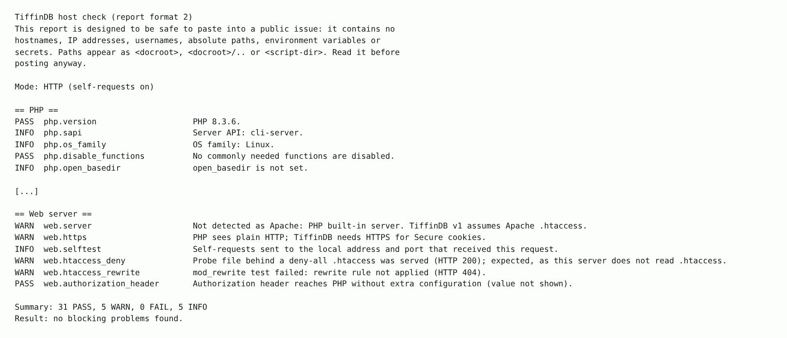
web.htaccess_deny and web.htaccess_rewrite must pass.With shell access you can also run it from the command line. The command-line run skips the Apache and HTTP checks, and PHP limits can differ from those of the web server, so the HTTP run is the one that counts.
php host-check.php # exit code 0: no FAIL lines; 1: at least one FAIL
php host-check.php --help| Result | Meaning for TiffinDB |
|---|---|
| FAIL | TiffinDB cannot run as designed: for example PHP older than 8.3, a missing pdo_sqlite, zip, or xmlreader, flock not working, or, on Apache, web.htaccess_deny or web.htaccess_rewrite failing. |
| WARN | Works with limits. Examples: fs.outside_webroot_writable (the data folder must then live inside the site, behind .htaccess, and pass the exposure probe), web.https, a low upload_max_filesize. |
| PASS, INFO | Meets the assumption, or context only. |
The limit thresholds in the script (128M memory, 30 s execution time, 8M upload and post size) are provisional values chosen for the check, not decisions recorded elsewhere (tools/host-check/README.md).
Part 4Get and prepare the files
Prepare the files on your own computer, then upload them. The host needs no Composer and no shell access.
-
Get the source code from the project repository, as a clone or as a downloaded zip file of the branch you want.
git clone https://github.com/osh-labs/tiffindb.git tiffindb cd tiffindb -
Install the runtime dependency without the development tools.
composer install --no-devA
vendor/folder withvendor/autoload.phpand OpenSpout. The repository does not commitcomposer.lock("lock": falseincomposer.json); OpenSpout is pinned to an exact version there. Optional: write
config/local.php(Part 7). Most installations need none.-
Upload the whole folder, including the dot-file
.htaccessat its top and inpublic/. Some FTP programs hide dot-files: make sure they are uploaded.
At run time TiffinDB reads public/, src/, templates/, strings/, plugins/, config/, and vendor/. tools/admin/reset-password.php is needed for the command-line password reset. docs/ and tests/ are not read at run time; the file list of the future release archive is an M7 decision.
Not run here
The clone and composer install --no-dev were not run while this guide was written (no network access to other hosts in the build environment). The application copies used for the screenshots were made from the repository with a vendor/ folder from an earlier composer install.
Part 5Deploy
Not verified on Apache
The three arrangements below are derived from .htaccess, public/.htaccess, public/index.php, and the data-folder code. They have not been run on Apache or on the reference shared host.
Where the data folder goes
The setup page chooses the data folder by this rule (src/Core/Install/DataFolder.php, src/Core/Storage/DataDirectory.php):
- If
data_diris set inconfig/local.php, that absolute path and nothing else. - Otherwise the first of
../tiffindb-data(beside the application folder) anddata/(inside it) that can be written and lies outside the document root. In arrangement A both lie outsidepublic/, sodata/is used when../tiffindb-datacannot be made. - Otherwise
data/inside the document root, if it can be written. Setup then runs the exposure probe and stops unless the probe proves that the folder cannot be downloaded.../tiffindb-datainside the document root is never used.
Step 1 names the chosen folder in its row "A place for the data folder", for example "TiffinDB will keep its data in ../tiffindb-data, outside the web site" or "... in data, outside the web site". Write down which folder it is: a data folder named data lives inside the application folder, and an update or move that replaces the application folder would delete it.
"Can be written" means the folder exists and is writable, or it does not exist and its parent folder is writable. An existing folder is used only if it is empty or holds only what an earlier setup attempt left. A location is "outside" only if the document root is known and both paths resolve; anything uncertain counts as inside.
public/ is on the web. The root .htaccess is not used.tiffindb folder is itself the document root, ../tiffindb-data is outside the site and is chosen automatically.How a request reaches TiffinDB
.htaccess is a guard for arrangement B: no file outside public/ can be fetched. The data folder's own .htaccess (Require all denied) is a second barrier.5.1 Shared hosting, document root set to public/
Use this arrangement when the hosting control panel lets you choose the folder that a domain or subdomain serves. Control panels call it the document root or web directory.
Upload the prepared
tiffindbfolder to your home folder, beside (not inside) the folder of any existing site, for example~/tiffindb/.In the control panel, set the document root of the domain or subdomain to
~/tiffindb/public.Turn on HTTPS for the domain in the control panel.
-
Open
https://<your domain>/.TiffinDB redirects to
/setup. The row "A place for the data folder" reads "TiffinDB will keep its data in ../tiffindb-data, outside the web site." Complete the setup page (Part 6).
If PHP cannot write to the account's home folder, step 1 reports "TiffinDB will keep its data in data, outside the web site". The data then lives in ~/tiffindb/data/, inside the application folder: it is not on the web, but it is deleted with the application folder. To avoid that, create ~/tiffindb-data/ yourself, empty, with write access for PHP, or set data_dir (Part 7), then reload step 1.
5.2 Shared hosting, fixed document root
Use this arrangement when the document root cannot be changed, for example ~/example.com/.
Upload the whole
tiffindbfolder into the document root, for example to~/example.com/tiffindb/. The site is then athttps://example.com/tiffindb/. TiffinDB detects that base path fromSCRIPT_NAMEand leaves/publicout of its own links.-
Best: create a folder outside the document root, for example
~/tiffindb-data/, and name it inconfig/local.php:<?php return ['data_dir' => '/home/example/tiffindb-data'];The path must be absolute. Your host's file manager or support shows the absolute path of your home folder.
Turn on HTTPS for the domain.
-
Open
https://example.com/tiffindb/and complete the setup page.With
data_diroutside the site, step 1 reads "... in the folder set as data_dir in config/local.php, outside the web site." Without it, step 1 says the data will be indatainside the TiffinDB folder, "protected by a server rule. Step 2 tests that the rule works."
The root .htaccess passes every request into public/. Without mod_rewrite it refuses every request (403), so the site does not work at all rather than exposing files. When the data folder is inside the document root, step 2 of the setup page runs the exposure probe and stops on any result other than a proven refusal.
5.3 Your own Apache server
The shape is that of arrangement A. These steps assume a Linux server with Apache and PHP 8.3 installed. The Apache directives below are given from the Apache documentation and have not been run against TiffinDB.
Put the prepared folder at, for example,
/srv/tiffindb, owned by your account and readable by the web server user.Create the data folder beside it, empty, owned by the web server user, mode 0750:
/srv/tiffindb-data. TiffinDB itself makes folders with mode 0750 and files with mode 0640.-
Point the virtual host at
public/and let its.htaccesswork. The.htaccessfiles useRewriteEngine,RewriteCond,RewriteRule,Header, andAddType(allowed byAllowOverride FileInfo) and, in the data folder,Require(allowed byAllowOverride AuthConfig).<VirtualHost *:443> ServerName tiffindb.example.com DocumentRoot /srv/tiffindb/public <Directory /srv/tiffindb/public> AllowOverride FileInfo AuthConfig Options SymLinksIfOwnerMatch Require all granted </Directory> # TLS settings for your certificate go here. </VirtualHost>Apache applies
RewriteRulein a.htaccessfile only whenOptions FollowSymLinksorSymLinksIfOwnerMatchis on for the folder; the example sets the second. Enablemod_rewrite(andmod_headers). See the Apache HTTP Server documentation for TLS and for your distribution's way of enabling modules. Reload Apache, open the site over HTTPS, and complete the setup page.
Behind a reverse proxy
TiffinDB never reads X-Forwarded-* or Forwarded headers. If TLS ends at a proxy and PHP sees plain HTTP, the HTTPS row warns and session cookies lose the Secure flag. Set 'secure_cookies' => true in config/local.php in that case.
A second effect: for a form sent by a browser that does not send the Sec-Fetch-Site header, TiffinDB compares the browser's Origin header with the scheme and Host that PHP sees (Kernel::originAllowed()). If the proxy ends TLS or rewrites Host, the two differ and every form is refused with the page "This form has expired". Pass the original Host through and let PHP see HTTPS (for example, TLS on Apache itself) if you use such browsers. Derived from the code; not run behind a proxy.
Part 6The setup page
Until the first Admin exists, every page redirects to /setup. The page has three steps; nothing is saved until step 2 makes the data folder. After setup, /setup answers 404.
src/Core/Install/ExposureProbe.php, M1 spec section 10.4).Step 1: Check this server
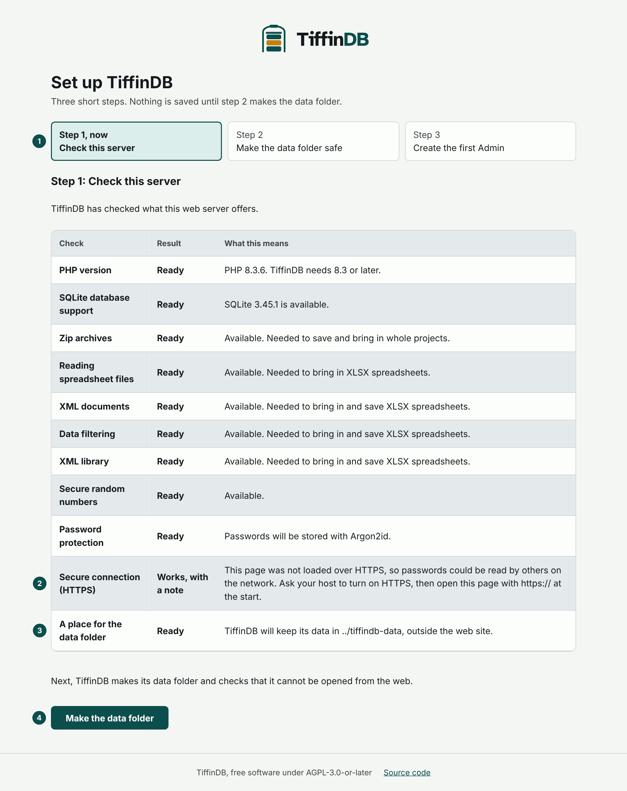
- The step indicator. Steps that are done read "done".
- The HTTPS row. On a live site this must read Ready: open the page with
https://. - Where the data folder will be, as a relative path, never an absolute one.
- Make the data folder starts step 2.
If a check fails, the button is replaced by Check again:
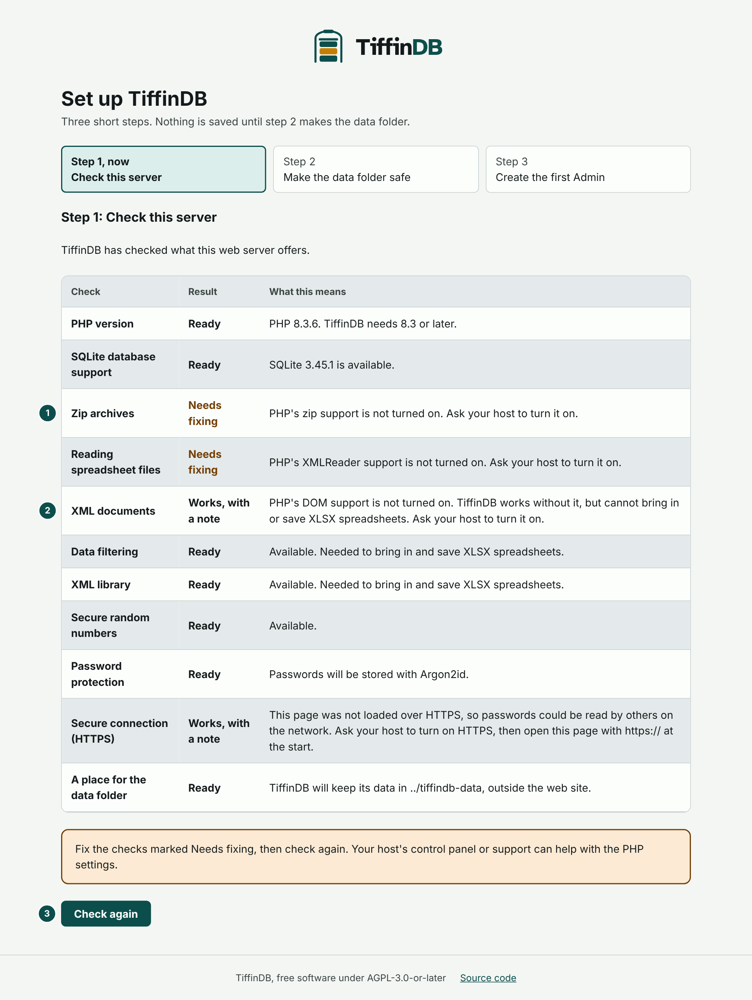
zip, xmlreader, and dom extensions. (1) a check that stops setup; (2) a check that only limits XLSX import and export; (3) Check again reloads the page.Step 2: Make the data folder safe
When the data folder is outside the document root, step 2 has no page of its own: step 3 follows at once with the message "Step 2 is done: the data folder is ready, and it cannot be opened from the web." Otherwise TiffinDB runs the exposure probe:
- It writes a file with a random value into the data folder, and a control file with another random value into
public/. - It connects to its own server, at
SERVER_ADDRandSERVER_PORT(never to a name), and asks for the control file. That file must come back; this proves that the request reached this installation and not another site on the same server. - It asks for the data-folder file at every path where it could be served. The folder is safe only if every request is refused (4xx, or 2xx without the value).
- It deletes both files.
The probe also gives "inconclusive" when the server port is neither the scheme's default (80, or 443 for HTTPS) nor the port in the Host header, and when an HTTPS certificate does not verify. The probe cannot see an exposure through another virtual host, alias, or proxy that maps to the folder by a different path. This is why a data folder outside the web site is the better choice.
SERVER_ADDR is not set, so a data folder inside the document root always gives this result.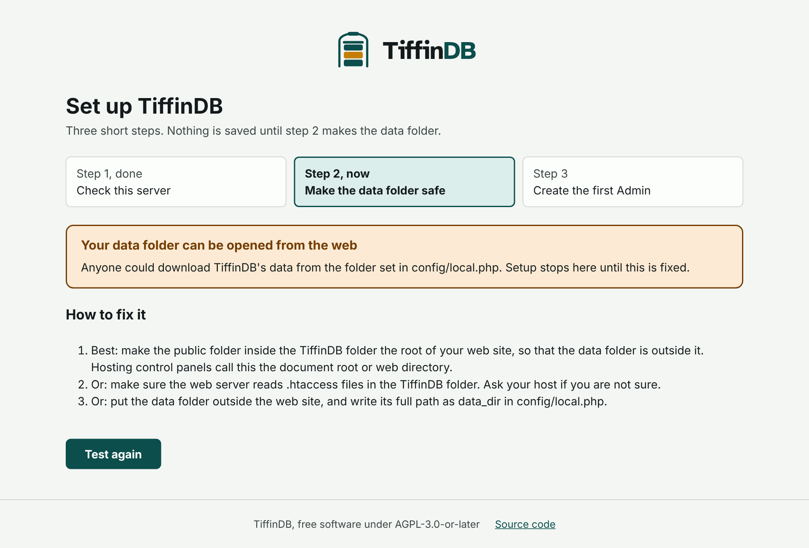
.htaccess and serve the data folder, as Apache would with AllowOverride None.Fix the cause, then select Test again. The folder stays in place between attempts; it holds nothing sensitive yet.
Step 3: Create the first Admin
Only someone who can read the server's files can finish setup: step 3 asks for a one-time setup code that TiffinDB wrote to setup-code.txt in the data folder. The help text under the field names the file, for example ../tiffindb-data/setup-code.txt. The code has 16 characters in four groups, XXXX-XXXX-XXXX-XXXX; case, spaces, and hyphens do not matter when you type it.
-
Open
setup-code.txtwith your hosting file manager, an FTP program, or a shell, and copy the code.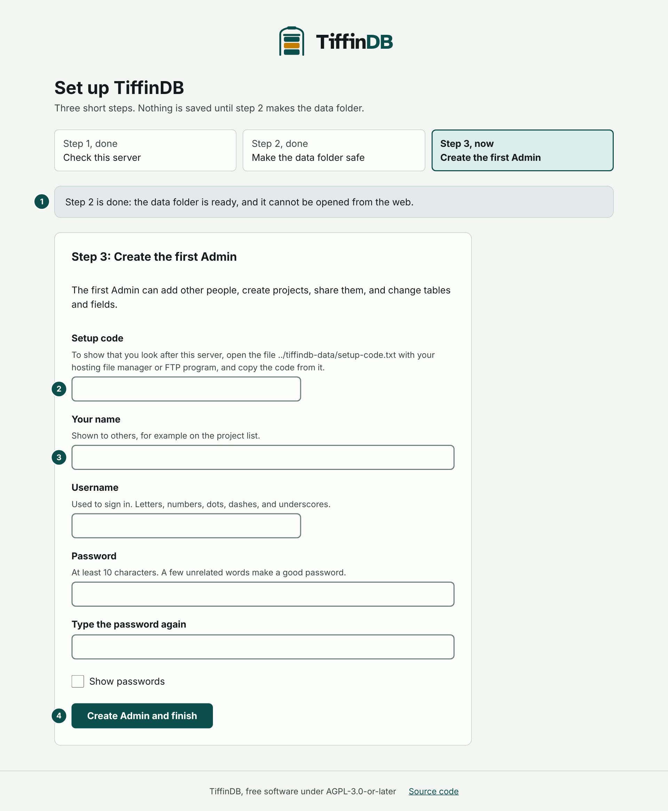
Step 3. (1) step 2 is done; (2) the setup code, with the file to open; (3) the name shown to others; (4) the button that finishes setup. -
Paste the code into Setup code. Fill in Your name, Username (letters, numbers, dots, dashes, and underscores), and a password of at least 10 characters twice. The password must not be the username and must fit in 72 bytes.
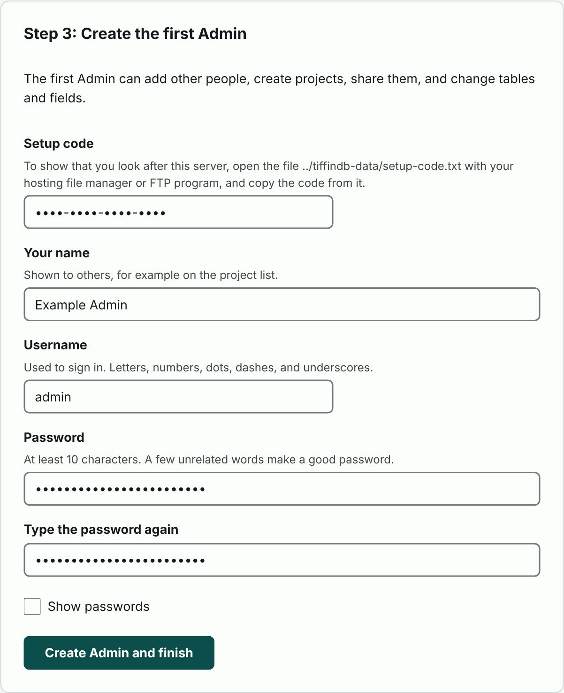
Ready to submit. The code value is masked in this picture. -
Select Create Admin and finish.
TiffinDB deletes
setup-code.txt, signs you in, and shows the project list with "TiffinDB is ready. Select New project to make your first project."
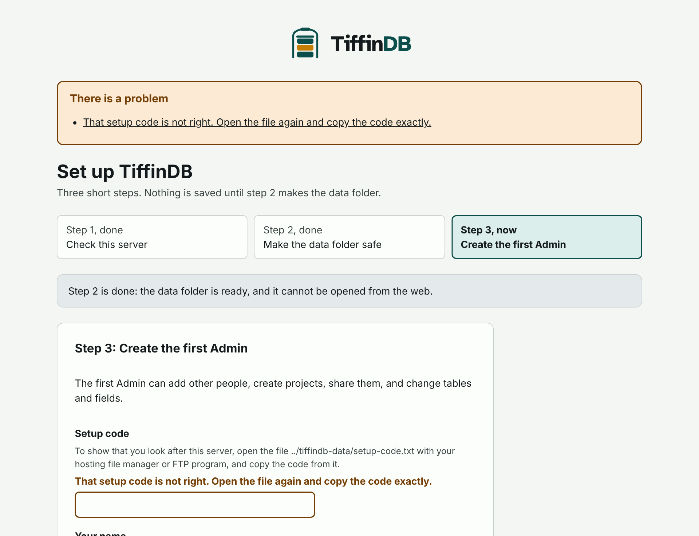
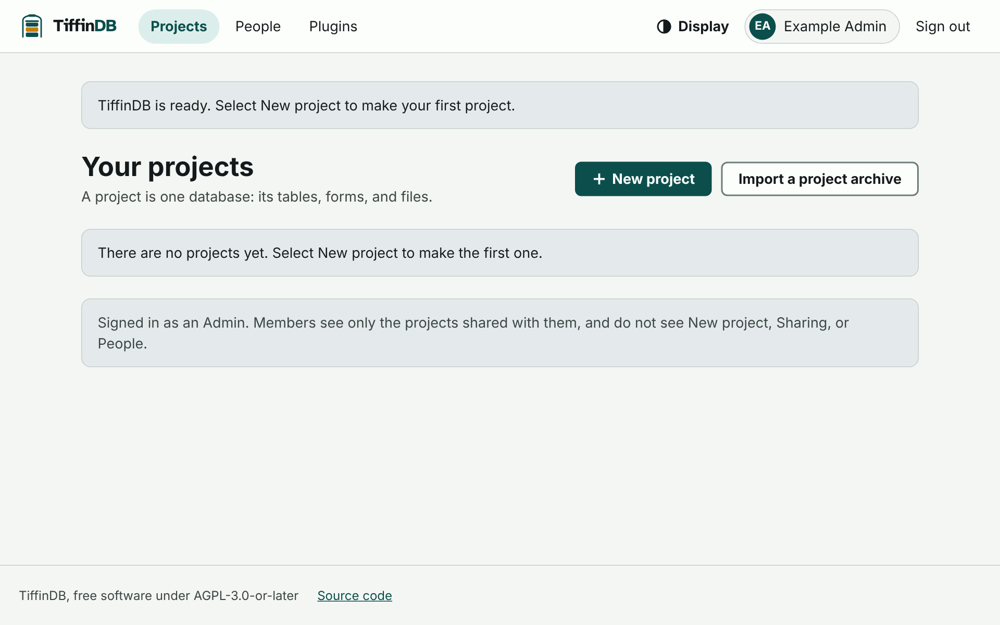
Every later visit starts at /sign-in. The User Guide continues from there.
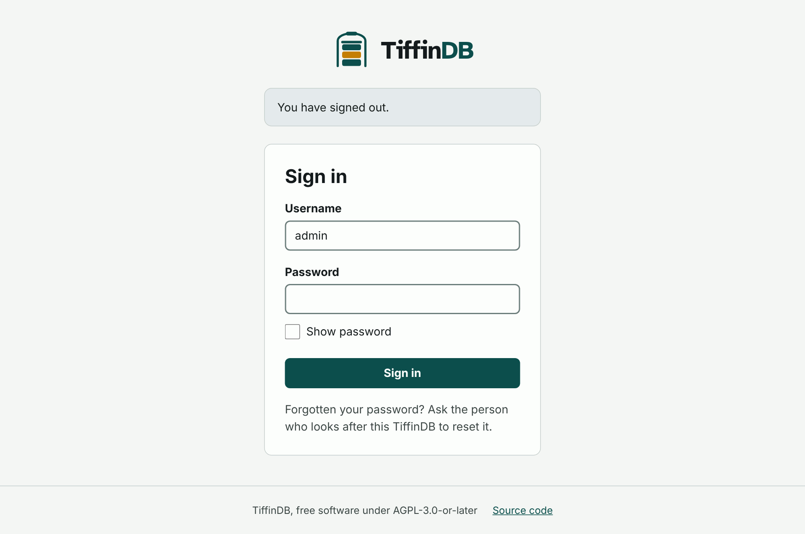
Part 7Configuration reference
config/local.php
Optional, ignored by git, and never meant to hold a secret. It returns a PHP array with any of three keys (Kernel::LOCAL_KEYS). An unknown key or a wrong type makes every page show the plain message "Something went wrong. TiffinDB could not show this page." and writes the reason to the PHP error log.
data_dir- An absolute path. The data folder, and the only candidate when set. Also read by the password reset tool. Not set:
../tiffindb-data, thendata/. timezone- A time zone identifier, for example
Europe/Berlin. Dates and times are shown in this zone. Not set: PHP'sdate.timezone. secure_cookiestrueorfalse. Forces theSecureflag of the session and form cookies on or off. Not set: the flag follows the request (on for HTTPS).
<?php
return [
'data_dir' => '/home/example/tiffindb-data',
'timezone' => 'Europe/Berlin',
'secure_cookies' => true,
];config/app.php
Committed defaults. Do not change it for an installation; use config/local.php.
| Key | Value | Use |
|---|---|---|
version | 0.1.0-dev | Application version, added to asset URLs |
source_url | https://github.com/osh-labs/tiffindb | Target of the footer "Source code" link (AGPL section 13). If you run a modified copy, point it at your modified source. |
appearance_preview | false | Development only |
PHP settings
| Setting | How TiffinDB uses it |
|---|---|
upload_max_filesize, post_max_size | Upload screens state the smallest of these and 64 MiB. A request larger than post_max_size gets the page "That file is too large" (413). A file larger than upload_max_filesize in a smaller request comes back as an error on the form. |
display_errors | Turned off by public/index.php itself. Errors go to the PHP error log. |
date.timezone | Used when timezone is not set in config/local.php. |
memory_limit, max_execution_time | Not checked by TiffinDB. Imports and exports run in chunks. The host check reports both against provisional thresholds. |
Part 8Security checklist
For a site that is reachable from the internet. Items about Apache are derived from the code and have not been checked on Apache.
- The site is served over HTTPS, and step 1 showed Ready for "Secure connection (HTTPS)". Behind a TLS proxy,
secure_cookiesistrue. - The data folder is outside the document root (arrangement A or own server), or
data_dirpoints outside it. - If the data folder is inside the site: step 2 gave "safe", and a request for
<site>/data/system.sqlitegets 404 or 403. - Requests for
/config/local.php,/src/, and/vendor/do not return files (they are outside the site, or arrangement B's root.htaccesssends them to the front controller). setup-code.txtis gone from the data folder. TiffinDB deletes it after setup, and again on a later request if the first deletion failed.host-check.phpand anytiffindb-hostcheck-*folders are deleted from the host.- The data folder is writable only by the account PHP runs as (TiffinDB uses modes 0750 and 0640).
- There is a second Admin, so that one Admin can set a temporary password for the other.
- Backups of the data folder exist and have been restored once as a test (Part 10).
- PHP and the operating system get security updates from the host or from you.
What TiffinDB does by itself: passwords are stored with Argon2id (bcrypt where Argon2id is missing); only hashes of session tokens are stored; sign-in is throttled (five failures for a username or twenty from one address within 15 minutes start a wait); every response carries a Content Security Policy, X-Frame-Options: DENY, and other security headers. TiffinDB does not send Strict-Transport-Security; set it on the web server if you want it.
Part 9Development server
For trying TiffinDB or working on it. PHP's built-in server does not read .htaccess files; public/index.php does the static-file routing itself under it.
-
Get the source and install all dependencies, including the test tools:
git clone https://github.com/osh-labs/tiffindb.git TiffinDB cd TiffinDB composer install -
Start the server:
composer serveThe script runs
php -S 127.0.0.1:8080 -t public public/index.phpwith no time-out. Openhttp://127.0.0.1:8080/. Complete the setup page. Without
config/local.php, the data folder is../tiffindb-data, beside your checkout. The document root ispublic/, so the folder is outside it and no exposure probe runs.
Tip: several copies
Copies of the application that sit in the same parent folder share ../tiffindb-data. Give each copy its own config/local.php with its own data_dir, or keep each copy in its own parent folder, and start each on its own port: php -S 127.0.0.1:8081 -t public public/index.php.
On the built-in server the exposure probe can only give "inconclusive" (no SERVER_ADDR, and a single worker cannot answer its own request). Keep the data folder outside public/ in development.
| Command | What it does | Result here |
|---|---|---|
composer lint | php -l on every PHP file (tools/dev/lint.php) | 786 files, 0 failed |
composer test | The offline PHPUnit suite; no network, synthetic fixtures | OK: 9503 tests, 1 skipped, about 3 minutes |
composer check | lint, then test. This is what CI runs. | The two above |
composer serve | The development server on port 8080 | Not run as such; the same php -S command was run on other ports |
Run on PHP 8.3.6 in a copy of the application, as root with COMPOSER_ALLOW_SUPERUSER=1 because the build container runs as root. Do not run Composer as root on a real machine.
Part 10Operations
Backups and restore
The data folder holds everything that belongs to the installation (ADR 0011). A copy of it, made while nobody uses TiffinDB, is a complete backup. The databases run in SQLite's WAL mode: while a database is in use, recent changes can be in its -wal file, so a copy made during use can be incomplete or inconsistent.
docs/formats/tiffin.md, section 1.- Full backup: copy the data folder and
config/local.php. On a shell:tar -czf tiffindb-backup.tar.gz tiffindb-data, run from the folder that holds the data folder. - One project: an Admin downloads a project archive from the project's Export page. It holds every table, record, form, and attached file, including records in the trash, but no accounts or sharing.
- CSV, XLSX, and JSON exports are for using the data elsewhere. They are not complete backups (
docs/formats/json-export.md).
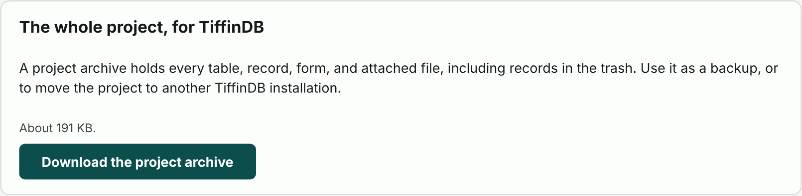
Restore a full backup: stop use of the site (for example, take it offline in the control panel), check where the data folder is (the folder that holds system.sqlite), replace it with the copy, including its .htaccess, make the copy writable for the user PHP runs as, and open the site. Restore a project archive with Import a project archive on the project list; it always makes a new project, shared with nobody. An archive too large to upload can be restored by hand (docs/formats/tiffin.md, section 13.4). There is no screen yet for restoring a snapshot or for deleting a project; both are planned for M7.
Password reset
An Admin can set a temporary password for anyone on that person's page under People. The person is signed out everywhere and chooses a new password at the next sign-in.
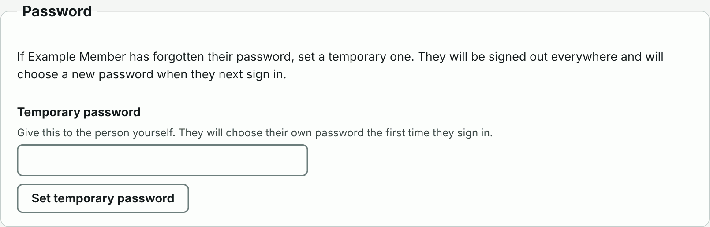
If the only Admin has forgotten the password, use the command-line tool. It needs shell access to the server. Without a shell and without a second Admin, there is no way to recover in this version; recovery without a shell is planned for M7.
cd /path/to/tiffindb
php tools/admin/reset-password.php <username>
php tools/admin/reset-password.php <username> --data-dir=/path/to/tiffindb-data- It finds the data folder as the application does (
data_dirinconfig/local.php, then../tiffindb-data, thendata/), or uses--data-dir. - It reads the new password twice from standard input, with echo off where the terminal allows it, applies the password rules, ends all sessions of that person, clears the sign-in wait for that username, and writes
people.password_setto the audit log. - The new password does not have to be changed at the next sign-in. A deactivated person must still be reactivated by an Admin.
- Run it as the user that owns the data folder (on your own server, the web server user), so that the database files it touches stay writable for PHP.
| Message | Exit code |
|---|---|
| The password has been reset, and every session of that person has ended. | 0 |
| Usage: php tools/admin/reset-password.php <username> [--data-dir=<path>] | 1 |
| No TiffinDB data folder was found. Give its location with --data-dir=<path>. | 1 |
| No person has that username. | 1 |
| The two passwords are not the same. | 1 |
| The password must have at least 10 characters. | 1 |
Each message above was produced by running the tool against a copy of the demo data. Not run from a web server: there it exits with code 2.
Moving an installation
Stop use of the old site and copy the data folder and
config/local.php(as for a backup).Install the application on the new host (Part 4, Part 5), but do not open the setup page yet.
-
Put the data folder outside the new site's document root:
- beside the application folder as
tiffindb-data, but only where that place is outside the document root (arrangement A, own server); - otherwise anywhere outside the site, with
data_dirinconfig/local.phpset to its new absolute path.
Copy the whole folder, including its
.htaccess, and check that dot-files survived the transfer. - beside the application folder as
-
Make it writable for PHP on the new host and open the site.
The sign-in page, not the setup page. People, passwords, sharing, and projects come along, because they are all in the data folder. Everyone signs in again if the site address changed.
Warning
An installed site does not run the setup page again, so nothing checks the new place of the data folder. TiffinDB uses the first of data_dir, ../tiffindb-data, and data/ that holds system.sqlite, wherever it is (DataDirectory::locate()). A data folder copied into the document root, for example beside the application in arrangement B, is protected only by its copied .htaccess, which nothing has tested on the new server. Keep it outside the document root.
Derived from the data-folder search order; not run as a move between two hosts.
Updating
Caution
There is no tested upgrade path before M7. Make a full backup first. Before you replace anything, check where the data folder is (the folder that holds system.sqlite). If it is data/ inside the application folder, move it out first and set data_dir, or keep that folder when you replace the application files.
Make a full backup while the site is idle, and check where the data folder is.
Replace the application files with the new version, and run
composer install --no-devfor it. Keepconfig/local.php.-
Open the site.
On first use, the system database is migrated forward, and each project file is upgraded when it is next opened, after an automatic
format-upgradesnapshot (docs/formats/tiffin.md, section 11).
Upgrades are forward only. An older version refuses a system database or project file that a newer version has upgraded. To go back, restore the backup.
Uninstalling
Export anything you want to keep, then delete the application folder and the data folder, and remove the domain or virtual host configuration. TiffinDB creates nothing else: no database server, no scheduled tasks, no files outside these two folders except PHP's own temporary upload files and log lines.
Part 11Troubleshooting
TiffinDB writes the cause of an unexpected error to the PHP error log, as one line starting with TiffinDB:. Error pages never show a file path or the PHP version.
| Symptom | Likely cause | What to do |
|---|---|---|
| Plain text: "TiffinDB cannot start because its dependencies are not installed." | vendor/autoload.php is missing | Run composer install --no-dev and upload vendor/. |
| Plain text: "Something went wrong. TiffinDB could not show this page." on every page | A bad config/local.php (unknown key, relative data_dir, unknown time zone), PHP older than 8.3, or missing templates/ or strings/ | Read the PHP error log line that starts with TiffinDB:. Fix the file or the PHP version. |
| 403 for every request (arrangement B) | mod_rewrite is not available, so the root .htaccess denies everything (derived, not run) | Ask the host to enable mod_rewrite, or use arrangement A. |
| 404 for every page except the start page, or 500 from Apache | .htaccess files are ignored or a directive is not allowed (AllowOverride) (derived, not run) | Warning: if .htaccess is ignored in arrangement B, the whole TiffinDB folder, including data/, config/, and vendor/, may be downloadable. Stop, take the site offline, and run the host check. Check that the .htaccess files were uploaded. |
| Pages without styles | Static files under public/assets/ are not served | Check the upload of public/assets/ and the document root. |
| Step 1: "Needs fixing" for an extension | The PHP extension is not enabled | Enable it in the hosting panel's PHP settings, then Check again. |
| Step 1: "TiffinDB cannot make its data folder at ../tiffindb-data" | PHP cannot write to the folder that holds the application folder, and data/ cannot be written either | Create the folder empty with write access for PHP, or set data_dir. |
| Step 2: "TiffinDB found files that it did not put there" | The chosen folder is not empty | Empty it, or set data_dir to another folder. |
| Step 2: "TiffinDB could not test the data folder" | Data folder inside the site and the probe got no clear answer: built-in server, a host that blocks connections to itself, a certificate that does not verify, a non-default port | Move the data folder out of the site (arrangement A or data_dir), then Test again. |
| Step 2: "Your data folder can be opened from the web" | .htaccess is ignored where the data folder is | Same fixes as above. Do not continue with the folder inside the site. |
setup-code.txt cannot be opened with FTP | The file has mode 0640 and belongs to the user PHP runs as; on some hosts that is not your FTP user (not verified on the reference host) | Use the hosting file manager or a shell as the right user, or ask the host. |
| "Too many tries. Wait ..." on step 3 | Five wrong setup codes | Wait, then copy the code again exactly. |
| Sign-in works, but you are signed out at once on HTTP | secure_cookies is true on a plain-HTTP site, so the browser may not keep the session cookie (derived, not run) | Use HTTPS, or remove the setting in development. |
| A page "That file is too large" | The whole request is larger than post_max_size; PHP drops the form, and TiffinDB answers 413 | Raise post_max_size (and upload_max_filesize). TiffinDB's own cap is 64 MiB. |
| The form comes back with "That file is larger than ..., the largest this installation accepts." | The file is larger than upload_max_filesize (or TiffinDB's 64 MiB cap), but the request fits in post_max_size | Raise upload_max_filesize, keeping post_max_size larger. |
| The only Admin forgot the password | Use tools/admin/reset-password.php (shell needed). |
Part 12Quick reference
Paths
Addresses
/setup- Setup page; 404 once installed
/sign-in- Sign in
/projects- Project list
/admin/people- People (Admin)
Limits
- PHP 8.3 or later; SQLite 3.35.5 or later
- Upload cap 64 MiB, or PHP's lower limit
- Passwords: 10 characters to 72 bytes
- Setup code: 5 tries, then a wait
Commands
composer install --no-dev # runtime dependency for a site
composer install # development, with test tools
composer serve # http://127.0.0.1:8080/
composer lint # php -l on every file
composer test # offline test suite
composer check # lint, then test
php tools/host-check/host-check.php # host check, command line
php tools/admin/reset-password.php <username> [--data-dir=<path>]TiffinDB is free software under the GNU Affero General Public License, version 3 or later. Source code: github.com/osh-labs/tiffindb. Screenshots: tools/docs/shots-install-guide.js.